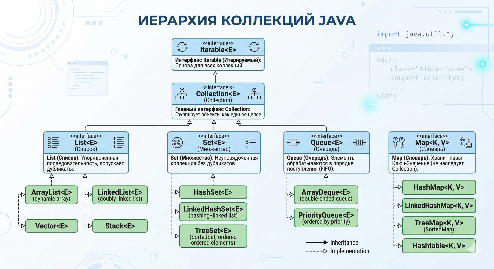

Коллекции¶
Как устроены List, Set и Queue в Java и как выбрать коллекцию под задачу. Чаще всего спрашивают ArrayList против LinkedList, Comparable против Comparator и ConcurrentModificationException. Устройство Map — на странице HashMap, коллекции для многопоточного кода — в Потокобезопасных коллекциях.
Иерархия и интерфейсы¶
Как устроена иерархия коллекций?¶
Уровень: Junior
Ответ вслух
Всё начинается с Iterable — его умеет обходить for-each. От него наследуется Collection с базовыми add, remove, size, contains, а от неё три ветки: List (порядок и индексы), Set (уникальность) и Queue (порядок обработки). Map стоит отдельно.

Интерфейс Iterable говорит: "по этому объекту можно пройтись в цикле for-each". Он возвращает Iterator, который шагает по элементам через hasNext() и next(). Компилятор превращает for-each именно в такой цикл:
for (String s : list) {
System.out.println(s);
}
// Во что компилятор превращает for-each
Iterator<String> it = list.iterator();
while (it.hasNext()) {
String s = it.next();
System.out.println(s);
}
От Iterable наследуется Collection — базовый контракт для группы элементов. Он добавляет методы, которые умеют все стандартные коллекции: add(), remove(), size(), contains(), clear().
От Collection отходят три ветки, и каждая добавляет свои правила к базовому контракту:
List (список) |
Set (множество) |
Queue (очередь) |
|
|---|---|---|---|
| Контракт | Порядок и индексы | Уникальность | Порядок обработки (обычно FIFO — First In, First Out) |
| Порядок | Строго порядок добавления | Нет индексов; в большинстве реализаций порядок добавления не сохраняется | Порядок, в котором элементы должны быть обработаны |
| Дубликаты | Разрешены | Нельзя: add() уже существующего элемента вернёт false |
Разрешены |
| Свои методы | get(int index) |
— | offer(), poll(), peek() |
| Пример | История отметок пользователя за неделю по дням | Уникальные названия привычек | Очередь отправки push-уведомлений |
У Queue свои методы: offer() добавляет в конец, poll() достаёт и удаляет первый элемент, peek() показывает первый, не удаляя.
Queue<String> queue = new ArrayDeque<>();
queue.offer("push-1"); // добавить в конец
queue.peek(); // посмотреть первый, не удаляя → "push-1"
queue.poll(); // достать и удалить первый → "push-1"
queue.poll(); // очередь пуста → null
queue.remove(); // очередь пуста → NoSuchElementException
Ловушка: у Queue по два метода на каждое действие
add(), remove() и element() при неудаче бросают исключение, а offer(), poll() и peek() возвращают false или null. Разница видна на пустой очереди и на очереди с ограниченной ёмкостью. В коде обработки задач обычно берут вторую тройку.
Проверь себя
- Во что компилятор превращает цикл
for-eachпо коллекции? - Чем контракт
Setотличается от контрактаList? - Что вернут
poll()иremove()на пустой очереди?
Почему Map — это не Collection?¶
Уровень: Junior
Ответ вслух
Collection работает с одиночными элементами и её базовый метод — add(e), а Map работает с парами ключ → значение через put(k, v). Если бы Map наследовала Collection, ей пришлось бы реализовать add(e), у которого для пар нет осмысленного поведения. Это принцип разделения интерфейсов из SOLID.
На собесе спросят: "Почему List и Set наследуются от Collection, а Map стоит особняком?" Ответ — Interface Segregation из SOLID:
Collectionоперирует одиночными элементами (values). Её базовый метод —add(Element e).Mapоперирует парами (key → value). Её базовый метод —put(Key k, Value v).
Если бы Map унаследовалась от Collection, ей пришлось бы реализовать add(Element). Что этот метод делал бы в мапе и каким был бы ключ — непонятно, это сломало бы логику структуры данных. Поэтому Map — независимая ветка со своим интерфейсом.
Зато Map умеет отдавать свои данные как коллекции-представления (views):
Map<String, Integer> prices = new HashMap<>();
prices.put("кофе", 250);
Set<String> keys = prices.keySet(); // ключи
Collection<Integer> values = prices.values(); // значения
Set<Map.Entry<String, Integer>> entries = prices.entrySet(); // пары — так обходят всю мапу
for (Map.Entry<String, Integer> e : prices.entrySet()) {
System.out.println(e.getKey() + " = " + e.getValue());
}
Ловушка: представления — не копии
keySet(), values() и entrySet() смотрят прямо в мапу. prices.keySet().remove("кофе") удалит запись из самой prices, а prices.keySet().add("чай") бросит UnsupportedOperationException — добавить ключ без значения нельзя.
Проверь себя
- Почему
Mapне наследуетCollection? Какой принцип SOLID здесь работает? - Как обойти все пары ключ → значение в
Map? - Что произойдёт с мапой, если удалить ключ из её
keySet()?
Списки: ArrayList и LinkedList¶
Как устроен ArrayList?¶
Уровень: Junior
Ответ вслух
ArrayList — обёртка над обычным массивом Object[], поэтому доступ по индексу работает за O(1). Когда массив заполнен, создаётся новый в 1,5 раза больше и элементы копируются в него через System.arraycopy().
- Создание:
new ArrayList<>()создаёт пустой массив. При добавлении первого элемента массив получает ёмкость (capacity) по умолчанию — 10 элементов. - Расширение (resizing): при добавлении 11-го элемента:
- Создаётся новый массив.
- Его размер считается по формуле
oldCapacity + (oldCapacity >> 1): сдвиг вправо на 1 — это деление на 2. Массив растёт в 1,5 раза с округлением вниз: 10 → 15 → 22 → 33... - Старый массив копируется в новый через нативный
System.arraycopy(). - Старый массив уходит в Garbage Collector.
- Доступ:
get(index)работает за O(1) — адрес элемента вычисляется по индексу, без перебора.
// Как ArrayList считает новую ёмкость (упрощённо, из ArrayList.grow)
int newCapacity = oldCapacity + (oldCapacity >> 1);
// Знаешь размер заранее — задай ёмкость и обойдись без расширений
List<String> names = new ArrayList<>(10_000);
Ловушка: remove(int) против remove(Object)
У List<Integer> два метода remove, и выбирается по типу аргумента:
Проверь себя
- Какая ёмкость у
ArrayListпосле первогоadd()и как она растёт дальше? - Почему
get(index)уArrayListработает за O(1)? - Что удалит
ids.remove(1)уList<Integer>?
Как устроен LinkedList?¶
Уровень: Junior
Ответ вслух
LinkedList — двусвязный список: цепочка узлов Node, каждый хранит элемент и ссылки на соседей. Вставка и удаление на концах — O(1), а доступ по индексу — O(n), потому что до нужного узла приходится идти перебором.
Никакого единого массива внутри нет — только независимые объекты-узлы:
// Узел внутри LinkedList
private static class Node<E> {
E item; // данные
Node<E> next; // ссылка на следующий узел
Node<E> prev; // ссылка на предыдущий узел
}
Чтобы найти 500-й элемент, LinkedList начинает с головы или хвоста — с того конца, который ближе, — и последовательно перебирает узлы. Поэтому доступ по индексу — O(n).
Ловушка: get(i) в цикле
Проверь себя
- Что хранит узел
LinkedList? - Почему доступ по индексу у
LinkedList— O(n)? - Как правильно обойти
LinkedList, чтобы не получить O(n²)?
Что быстрее для вставки в середину: ArrayList или LinkedList?¶
Уровень: Middle
Ответ вслух
Как правило, ArrayList. Сама вставка в LinkedList — O(1), но до середины нужно дойти перебором узлов за O(n). ArrayList тоже тратит O(n), но сдвигает хвост одним System.arraycopy() по непрерывной памяти, и на практике это намного быстрее.
Классический вопрос: "Нужно вставить элемент в середину списка из миллиона элементов. Что быстрее?"
Частый неверный ответ: "Конечно LinkedList! Вставка O(1), просто перекинем ссылки. А ArrayList сдвинет полмиллиона элементов — O(n)."
Почему на деле побеждает ArrayList:
- Поиск узла: сама вставка в
LinkedList— O(1), но чтобы добраться до середины, узел нужно сначала найти, а это O(n) перебора. - Скорость сдвига:
ArrayListсдвигает элементы черезSystem.arraycopy(). Это интринсик JVM, который копирует память большими блоками, — он намного быстрее, чем переход по полумиллиону ссылок.
List<Integer> array = new ArrayList<>(source);
List<Integer> linked = new LinkedList<>(source);
int middle = source.size() / 2;
array.add(middle, 42); // O(n): arraycopy сдвигает полмиллиона элементов одним блоком
linked.add(middle, 42); // O(n): полмиллиона переходов по ссылкам до узла, потом O(1) вставка
Ловушка: O(1) у LinkedList — только когда узел уже найден
Дешёвая вставка у LinkedList бывает на концах (addFirst, addLast) и через ListIterator, который уже стоит на нужном месте. Вставка по индексу всегда начинается с перебора.
Проверь себя
- Из каких двух шагов состоит вставка в середину
LinkedListи какова сложность каждого? - Почему
ArrayListсдвигает элементы быстрее, чемLinkedListищет узел? - В каких случаях вставка в
LinkedListдействительно O(1)?
Почему LinkedList проигрывает даже при равной асимптотике?¶
Уровень: Senior
Ответ вслух
Из-за локальности данных (cache locality). Процессор читает память кэш-линиями, поэтому соседние ячейки массива приезжают в кэш вместе, а узлы LinkedList разбросаны по куче, и почти каждый переход по next — промах кэша. К тому же каждый узел — отдельный объект с заголовком и двумя ссылками, так что памяти уходит в разы больше.
Назови на собесе термин Cache Locality — он показывает, что ты понимаешь, как работает железо.
- Процессор читает из RAM не по одному байту, а блоками — кэш-линиями (cache line). Запросил
ArrayList[0]— в кэш подтянулись и[1],[2],[3]. - Массив лежит в памяти сплошным куском, поэтому следующие итерации цикла читают данные прямо из кэша.
- Узлы
LinkedListразбросаны по куче. Переход по ссылкеnextпочти всегда даёт промах кэша (cache miss), и процессор идёт в медленную RAM.
// Один и тот же обход, одинаковая асимптотика O(n)
long sum = 0;
for (int x : arrayList) sum += x; // массив читается подряд — данные уже в кэше
for (int x : linkedList) sum += x; // переход по next — промах кэша почти на каждом шаге
Итог
LinkedList потребляет в несколько раз больше памяти (объекты Node + ссылки) и проигрывает на уровне кэша процессора. В современном коде LinkedList практически не используется. Даже там, где нужна семантика Deque, ArrayDeque справляется лучше.
Ловушка: «у LinkedList же O(1) на концах»
Асимптотика одинакова у LinkedList и ArrayDeque, но ArrayDeque хранит элементы в массиве и не создаёт объект-узел на каждую вставку. Для стека и очереди бери ArrayDeque.
Проверь себя
- Что такое cache line и как она связана со скоростью обхода
ArrayList? - Почему обход
LinkedListмедленнее обходаArrayList, хотя оба O(n)? - Чем заменить
LinkedList, если нужен стек или очередь?
Множества¶
Как HashSet обеспечивает уникальность?¶
Уровень: Junior
Ответ вслух
HashSet — обёртка над HashMap: элемент становится ключом, а значением — общая заглушка PRESENT. Ключи в HashMap уникальны, поэтому уникальность и O(1) достаются HashSet без отдельного алгоритма.
На собесе спросят: "Как реализована уникальность в HashSet? Там свой алгоритм?" Нет — HashSet просто обёртка над HashMap.
// Внутри HashSet:
private transient HashMap<E, Object> map;
private static final Object PRESENT = new Object(); // заглушка-значение
public boolean add(E e) {
return map.put(e, PRESENT) == null; // твой элемент — ключ, PRESENT — заглушка
}
Твой элемент становится ключом в HashMap, а ключи в HashMap всегда уникальны — вся работа с хэшами и коллизиями достаётся HashSet бесплатно. PRESENT — один объект на все записи, отдельное значение на каждый элемент не создаётся.
Ловушка: уникальность держится на equals() и hashCode()
Если не переопределить их у элемента, два логически одинаковых объекта лягут в Set дважды. Контракт, пример с HashSet и цена ошибки — в Основы → Контракт equals() и hashCode().
Проверь себя
- Как
HashSetустроен внутри? - Что лежит в значениях внутренней
HashMapуHashSet? - Что будет, если положить в
HashSetобъекты без переопределённыхequals()иhashCode()?
Как TreeSet сортирует элементы?¶
Уровень: Junior
Ответ вслух
TreeSet построен на TreeMap — красно-чёрном дереве, поэтому элементы всегда отсортированы, а add, remove и contains работают за O(log n). Порядок задаёт Comparable самого элемента или Comparator, переданный в конструктор.
HashSet не хранит порядок. Когда нужны уникальные элементы в отсортированном порядке, берут TreeSet:
- Под капотом:
TreeMap(красно-чёрное дерево). - Сложность: O(log n) для
add,remove,contains— медленнееHashSet, зато элементы всегда отсортированы.
Встаёт вопрос: "Как TreeSet понимает, что больше, а что меньше? Как отсортировать свой класс Habit?" Порядок нужно объяснить — через Comparable или Comparator (следующая тема).
Ловушка: элемент без порядка — ClassCastException
Если положить в TreeSet объект, который не реализует Comparable, и не передать Comparator, получишь ClassCastException в рантайме. Дерево не понимает, куда класть элемент.
Ловушка: дубликаты определяет compareTo(), а не equals()
TreeSet считает элементы равными, если compare() вернул 0. Если компаратор не согласован с equals(), «разные» элементы молча не добавятся:
Проверь себя
- На чём построен
TreeSetи какова сложность его операций? - Что будет, если добавить в
TreeSetобъект безComparableи безComparator? - Как
TreeSetрешает, что элемент — дубликат?
Comparable или Comparator?¶
Уровень: Junior
Ответ вслух
Comparable задаёт естественный порядок внутри самого класса через единственный метод compareTo(). Comparator — внешний «судья» (паттерн Стратегия): их может быть сколько угодно, и он работает даже с классами, код которых нельзя менять.
java.lang.Comparable — естественный порядок¶
Используй, когда хочешь задать сортировку по умолчанию прямо в самом классе.
- Суть: "Я умею сравнивать себя с другими."
- Реализуется внутри класса:
class Habit implements Comparable<Habit>. - Метод:
compareTo(Habit other)возвращает отрицательное число (меньше), 0 (равно) или положительное (больше). - Когда: для очевидной естественной сортировки —
Stringпо алфавиту, даты от старой к новой.
public class Habit implements Comparable<Habit> {
private String name;
@Override
public int compareTo(Habit other) {
return this.name.compareTo(other.name); // сортировка по имени
}
}
java.util.Comparator — внешний судья¶
Что если нужно сортировать по-разному: на главном экране — по дате, в профиле — по приоритету? compareTo() один, а логик несколько. Comparator — это паттерн Strategy.
- Суть: "Я — независимый судья, сравниваю два чужих объекта."
- Реализуется снаружи класса: лямбда, анонимный класс или отдельный класс. Передаётся в
TreeSet,Collections.sort(),Stream.sorted(). - Метод:
compare(Habit h1, Habit h2). - Когда: в разных местах нужна разная сортировка или нельзя изменить исходный код класса.
// Сортировка по приоритету через лямбду
Comparator<Habit> byPriority = (h1, h2) -> Integer.compare(h1.getPriority(), h2.getPriority());
// ❌ не пиши h1.getPriority() - h2.getPriority(): на больших числах вычитание переполнит int
TreeSet<Habit> byPrioritySet = new TreeSet<>(byPriority);
// Цепочка: сначала по приоритету, потом по имени
Comparator<Habit> complex = Comparator.comparingInt(Habit::getPriority)
.thenComparing(Habit::getName);
Ловушка: компаратор через вычитание
(a, b) -> a - b выглядит короче, но ломается на больших числах: Integer.MIN_VALUE - 1 переполняется и становится 2147483647. Знак результата меняется, и сортировка тихо выдаёт неверный порядок. Используй Integer.compare() или Comparator.comparingInt().
Проверь себя
- Чем
Comparableотличается отComparatorи где реализуется каждый? - Как отсортировать объекты сначала по одному полю, потом по другому?
- Почему компаратор
(a, b) -> a - bопасен?
Очереди и стеки¶
Почему Stack устарел и чем его заменить?¶
Уровень: Junior
Ответ вслух
Stack из Java 1.0 наследует Vector: у него есть лишние методы вроде вставки по индексу, которые ломают LIFO, и synchronized на каждом методе. Вместо него берут ArrayDeque — он работает и как стек, и как очередь, без синхронизации и на непрерывном массиве.
Два базовых порядка обработки:
- FIFO (First In, First Out) — классическая очередь (
Queue). Кто первым встал в очередь в кассу, того первым и обслужат.- Где применяется: обработка потока задач, брокеры сообщений, поиск в ширину (BFS).
- LIFO (Last In, First Out) — стек (stack). Стопка тарелок: берёшь ту, которую положил последней.
- Где применяется: стек вызовов в JVM, отмена операций (Ctrl+Z), поиск в глубину (DFS), проверка скобочных последовательностей.
Почему не java.util.Stack:
- Наследование от
Vector:Stackнаписан в Java 1.0 и унаследован отVector. Стек получил кучу лишних методов (например, вставку по индексу в середину), что ломает саму семантику LIFO. - Синхронизация везде: все методы
Vector(иStack) помеченыsynchronized. В однопоточном коде это бессмысленная трата ресурсов.
Современная альтернатива — ArrayDeque, двусторонняя очередь на динамическом массиве:
Deque<String> stack = new ArrayDeque<>();
stack.push("A"); // добавить на вершину (LIFO)
stack.peek(); // посмотреть вершину, не снимая
stack.pop(); // взять с вершины
Queue<String> queue = new ArrayDeque<>();
queue.offer("A"); // добавить в хвост (FIFO)
queue.poll(); // взять из головы
- Нет синхронизации — нет лишних затрат.
- Данные в сплошном массиве — хорошая локальность для кэша процессора.
- Один класс заменяет и стек, и очередь.
Ловушка: «использую java.util.Stack»
На собесе это красный флаг: класс устарел по двум причинам выше. Правильный ответ — Deque<T> stack = new ArrayDeque<>().
Ловушка: ArrayDeque не принимает null
offer(null) и push(null) бросают NullPointerException: null в ArrayDeque зарезервирован как признак пустой ячейки и пустой очереди у poll().
Проверь себя
- Чем FIFO отличается от LIFO? Приведи по примеру применения.
- Назови две причины, почему
Stackустарел. - Как сделать стек и очередь на
ArrayDeque?
Как работает PriorityQueue?¶
Уровень: Middle
Ответ вслух
PriorityQueue — двоичная min-куча (binary min-heap), хранящаяся в массиве: в голове всегда минимальный элемент по Comparable или Comparator. peek() работает за O(1), offer() и poll() — за O(log n).
Обычная очередь — строго FIFO. Но что если задача с пометкой «КРИТИЧЕСКИЙ БАГ» должна проскочить вперёд?
Под капотом — двоичная min-куча, физически хранящаяся в массиве.
- Приоритет определяется так же, как в
TreeSet, — черезComparableилиComparatorв конструкторе. Max-кучу получают компараторомComparator.reverseOrder(). - Сложность:
peek()(посмотреть минимум) — O(1).poll()иoffer()— O(log n) из-за перестройки кучи.
Queue<Integer> pq = new PriorityQueue<>(List.of(5, 1, 4, 2, 3));
System.out.println(pq); // [1, 2, 4, 5, 3] — порядок кучи, а не сортировка!
while (!pq.isEmpty()) {
System.out.print(pq.poll() + " "); // 1 2 3 4 5 — строгий порядок только через poll()
}
Ловушка с итерацией
Если вывести PriorityQueue через for-each или println(), элементы не будут в порядке приоритета. Куча гарантирует только одно: самый приоритетный элемент всегда в индексе 0. Строгий порядок — только при последовательных вызовах poll().
| Структура | Интерфейс | Суть | Скорость | Когда использовать |
|---|---|---|---|---|
ArrayDeque |
Deque |
Универсал: и стек, и очередь | O(1) на концах | Очередь задач, обход графов (BFS/DFS) |
Stack |
List (через Vector) |
Устаревший | O(1), но с synchronized |
Никогда |
PriorityQueue |
Queue |
Очередь с приоритетом (двоичная куча) | O(log n) | Планировщики, алгоритм Дейкстры, Top-K задачи |
Проверь себя
- Какая структура данных лежит внутри
PriorityQueue? - Какова сложность
peek(),offer()иpoll()? - Почему
println(priorityQueue)не выводит элементы по порядку?
Итераторы¶
Откуда берётся ConcurrentModificationException?¶
Уровень: Middle
Ответ вслух
Стандартные коллекции считают изменения в поле modCount, а итератор на каждом шаге сверяет его со своим expectedModCount. Чаще всего CME ловят в одном потоке — удаляя элемент прямо внутри for-each. Удалять нужно через iterator.remove() или removeIf().
Классический случай — вообще без многопоточности: один поток удаляет элемент из ArrayList прямо внутри for-each.
List<String> list = new ArrayList<>(List.of("a", "b", "c"));
for (String s : list) {
if (s.equals("a")) {
list.remove(s); // ❌ на следующем шаге цикла — ConcurrentModificationException
}
}
list.removeIf(s -> s.equals("a")); // ✅ удалять через removeIf или iterator.remove()
То же через итератор явно:
Iterator<String> it = list.iterator();
while (it.hasNext()) {
if (it.next().equals("b")) {
it.remove(); // ✅ итератор сам обновит expectedModCount
}
}
Как итератор это обнаруживает? У стандартных коллекций есть счётчик изменений — modCount. Он растёт при каждом add и remove. Итератор запоминает его при старте в expectedModCount и на каждом шаге проверяет:
Это называется fail-fast: лучше сразу упасть с ошибкой, чем тихо работать с наполовину изменёнными данными и получить скрытый баг в бизнес-логике.
В многопоточном коде CME не гарантирован
Если один поток бежит по ArrayList, а другой в это время делает add(), исключение может и не вылететь: modCount — обычное поле без volatile, и итератор может просто не увидеть чужую запись. Вместо CME можно получить пропущенные элементы, null или ArrayIndexOutOfBoundsException. Fail-fast — это best-effort проверка для поиска багов, а не защита от гонок.
Fail-safe / weakly consistent — подход потокобезопасных коллекций из java.util.concurrent. Они не бросают CME: работают либо со снимком данных, либо допускают параллельные изменения без падения.
Проверь себя
- Как итератор понимает, что коллекцию изменили во время обхода?
- Как удалить элементы из списка во время обхода без CME?
- Защищает ли fail-fast от гонок в многопоточном коде?
Шпаргалка¶
| Тема | Запомнить |
|---|---|
| Иерархия | Iterable → Collection → List / Set / Queue. Map отдельно (Interface Segregation) |
Queue |
offer / poll / peek возвращают false / null; add / remove / element бросают исключение |
ArrayList |
Массив Object[], ёмкость 10 → 15 → 22 → 33 (×1,5), get — O(1) |
LinkedList |
Двусвязный список, доступ по индексу O(n), плохая cache locality — почти не используется |
| Вставка в середину | ArrayList обычно быстрее: LinkedList тратит O(n) на поиск узла |
HashSet |
Обёртка над HashMap, элемент — ключ, значение — PRESENT |
TreeSet |
Красно-чёрное дерево, O(log n); нужен Comparable или Comparator; дубликаты — по compare() == 0 |
Comparable vs Comparator |
Естественный порядок в классе vs внешняя стратегия; сравнивай через Integer.compare |
| Стек и очередь | ArrayDeque, не Stack; null не принимает |
PriorityQueue |
Двоичная куча: peek O(1), offer / poll O(log n); порядок только через poll() |
| CME | modCount против expectedModCount; удаляй через removeIf или iterator.remove() |